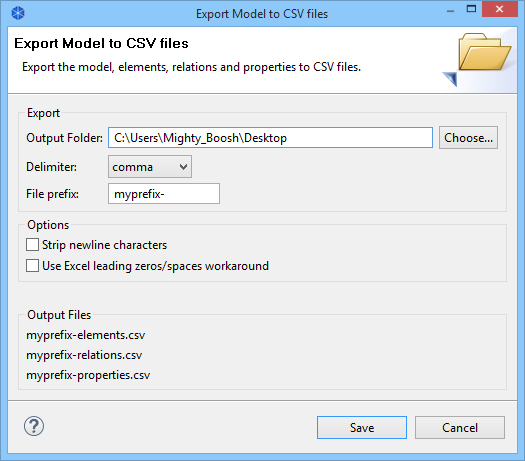

You can export a model's data to CSV format (Comma Separated Values). The data is exported in three different files - "elements.csv", "relations.csv" and "properties.csv". All data objects are identified by unique identifiers so that a property will reference an element or relation in the other files.
This option is available from the "Export Model To CSV..." menu item from the main "File->Export" menu. Once a model is selected in the Model Tree or in a View this menu item is enabled.
Exporting the model to CSV
The CSV field format for elements is - "ID", "Type", "Name", "Documentation", "Specialization"
The CSV field format for relations is - "ID","Type", "Name", "Documentation", "Source", "Target", "Specialization"
The CSV field format for properties is - "ID", "Key", "Value"
Note - the "Specialization" field is optional when importing.
Output Folder
Select the folder for the output files.
Delimiter
Select the CSV field delimiter character - comma, semicolon, or tab.
File prefix
Provide an optional prefix to add to the file names. For example, "MyModel-" will change the file names to "MyModel-elements.csv", "MyModel-relations.csv", and "MyModel-properties.csv".
File encoding
Select the file encoding to use - ANSI, UTF-8 or UTF-8 BOM. Some programs prefer one or the other file encoding. For example, MS Excel prefers the "UTF-8 BOM" encoding if Unicode characters are present in the CSV file.
Strip newline characters
If selected will remove all newline characters from multi-line text such as documentation.
Excel compatible
If selected will surround text starting with a zero or space with quote marks so that the data imports correctly into Excel. Also, any text field that starts with a "=", "+", "-", or "@" character will be prefixed with a space so that Excel does not interpret it as a formula.
You can also import CSV data into an existing model. The CSV files need to be in the same format as described above. Element and relationship IDs are optional, but you need to provide an ID for an element or relationship if it is referenced by another concept or property. If providing an ID then it needs to be unique to the file using alpha-numeric characters, for example - "id1", "8fe456d", "actor3". If an ID is not provided, a blank field "" should be present. In this case, an ID will be generated on import.
When importing CSV data into an existing model you can provide just one or all three files (elements, relations, properties). Usually you will provide all three files. The format of the files is as follows:
"xxx-elements.csv"
"xxx-relations.csv"
"xxx-properties.csv"
The prefix ("xxx") is optional but must be the same for all three files if used. All three file names need to match - for example: "myname-elements.csv", "myname-relations.csv" and "myname-properties.csv". At the very least, the filenames need to contain the ".csv" extension and the names end with "elements", "relations" or "properties".
The best way to understand the required format is to export an existing model to CSV format, and open the resulting files in a text editor, or spreadsheet application
When importing the CSV file(s) into Archi you can select any of the three CSV files in the Import dialog box. If there are corresponding "*.csv" files then these file(s) will be automatically imported at the same time.
It is also possible to merge/update the imported CSV data into an existing model. If a model concept already exists as denoted by its ID, and the CSV row entry contains different data to that in the model it is updated. For example, a Business Actor with id "9240f5bf", named "BA1", and no documentation can be updated with a row entry as follows:
"ID","Type","Name","Documentation", "Specialization"
"9240f5bf","BusinessActor","New Name","Additional Documentation", "Specialization Name"
You can import just one or two CSV files into an existing model. If you import just an "elements.csv" file then only elements will be imported. If you then import a "relations.csv" file that uses the corresponding concept IDs you can import just the relations. The same is true for the "properties.csv" file.
If you are manually creating CSV files make sure you save them using UTF-8 format to preserve all special characters.
Note - it is currently not possible to import and export View diagram information in CSV format.